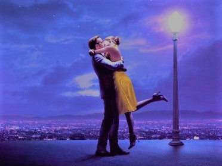

LaLa Land is a 2016 American musical romantic comedy-drama film written and directed by Damien Chazelle. It stars Ryan Gosling as a jazz pianist and Emma Stone as an aspiring actress, who meet and fall in love in Los Angeles while pursuing their dreams.
The story takes place in contemporary Los Angeles, where the lonely actress Mia's ambition is to be an actress and playwright who is addicted to old movie stars. She works as a barista on the set of warner bros. and often goes to audition, and if she does get caught, she will be overjoyed at the small role. Sebastian is a jazz pianist with a silk tie and a near-clean pursuit of art. He wants to start a club, but the music he's obsessed with is better suited to the museum, and few people are willing to pay for it. To survive, he joined a pop jazz band and fiddled with a music synthesizer in front of a screaming audience. Also pursuing their dreams, the two met each other in the city, falling in love, and consoling each other in singing and dancing, pursuing their lifelong dreams. But in a dream at the same time, art and commerce, hazy game between dream and reality, the other two people's emotion and tests, also faced with decisions after a series of setbacks, differences, they encourage each other not to give up the dream.
Although the story is old, but on the rendering of audio-visual language, charzir ray director use a lot of installation art, with a piece of geometric shapes and light the style feature of the area lies between light and shade made clear In the song choice, also show originality, story with music.
Music in Lala Land

The songs and score for La La Land were composed and orchestrated by Justin Hurwitz, Chazelle's Harvard University classmate, who also worked on his two prior films. The lyrics were written by Pasek and Paul, except for "Start a Fire", which was written by John Legend, Hurwitz, Marius De Vries and Angelique Cinelu.